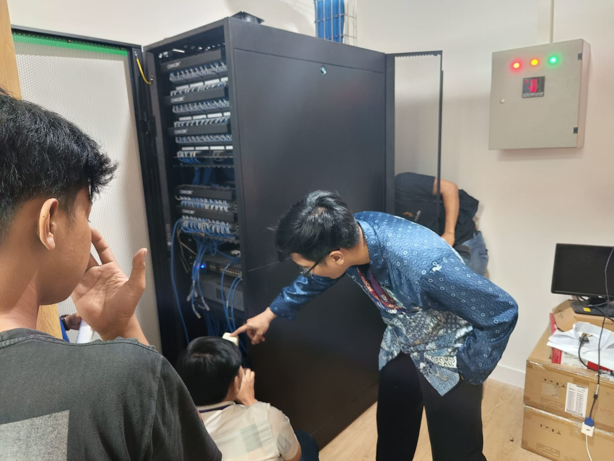
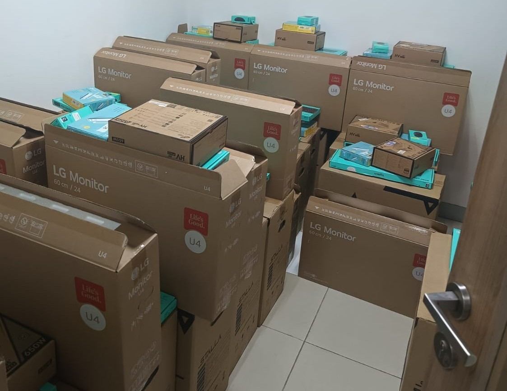
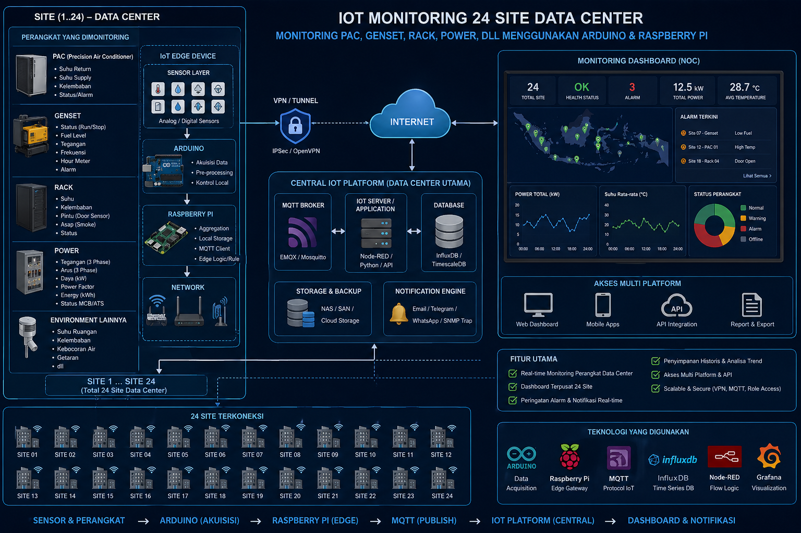
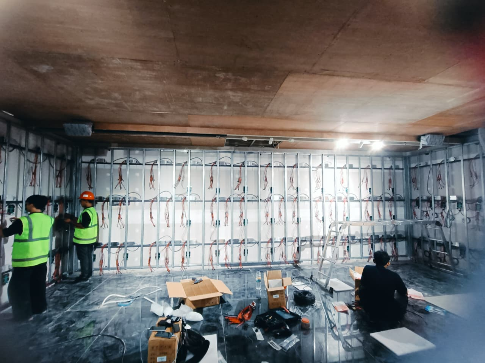
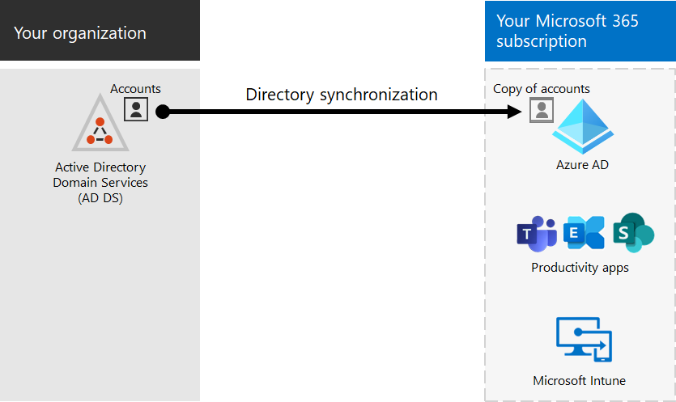

8+ years delivering enterprise IT operations, infrastructure modernization, cybersecurity readiness, and business transformation with measurable ROI.
Sites Managed
Operational Cost Reduction
Budget Saving
27001 & 9001 Auditor
Rare combination of leadership presence, technical depth, and execution speed.
Battle-tested capabilities for enterprise environments.
Network • Firewall • Microsoft 365 • SharePoint • Intune • Laravel • NodeJS • CCTV • Vendor Management • IT Support
Real documentation of delivered projects. Executive style portfolio gallery with lightweight lazy-loading visuals. Replace placeholders with your real project photos.

Office Infrastructure SetupRack, network, CCTV, access door, meeting devices.

IT Asset ManagementBudgeting, Manage, Troubleshoot and maintenance Rack, network, CCTV, access door, meeting devices.

24 Site Monitoring DashboardResponsive internal dashboard and reporting.

Video Wall InstallationLampro display for executive room.

Microsoft 365 MigrationExchange to Hybrid cloud migration.
From infrastructure rollouts to cloud migrations and executive AV systems, every project is focused on reliability, speed, and measurable business outcomes.